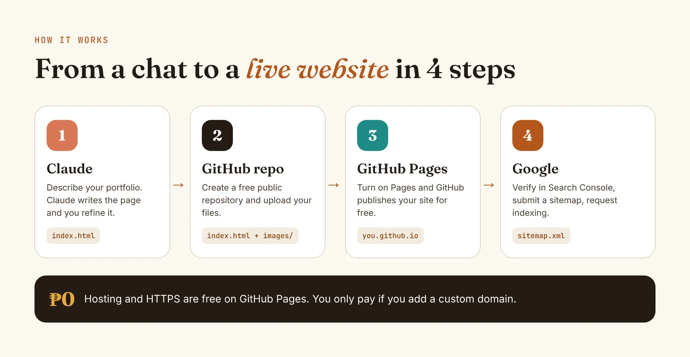
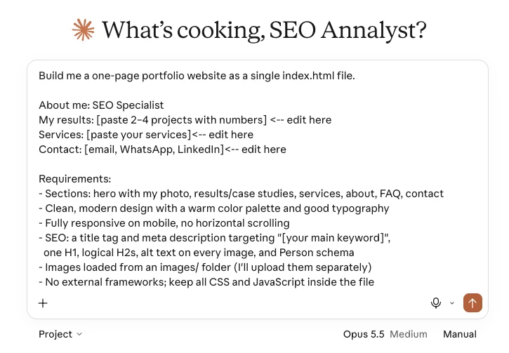
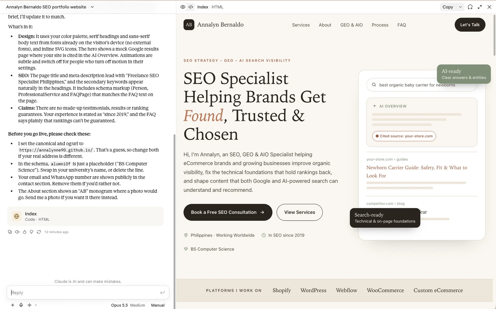
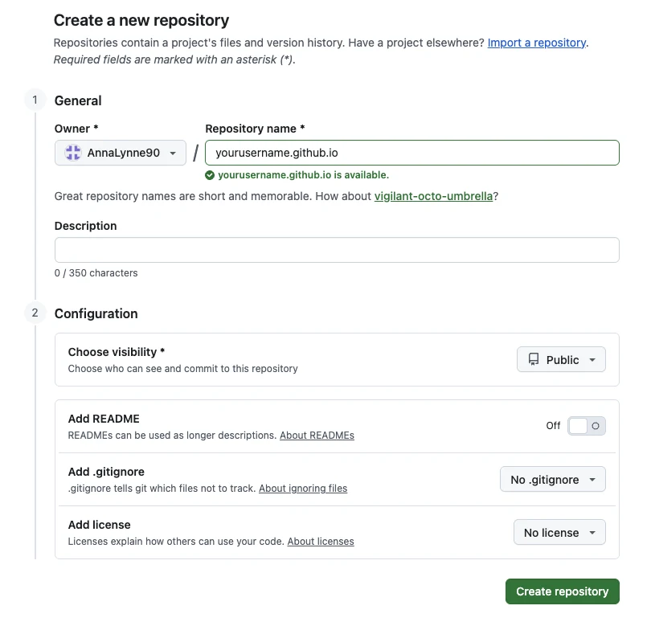
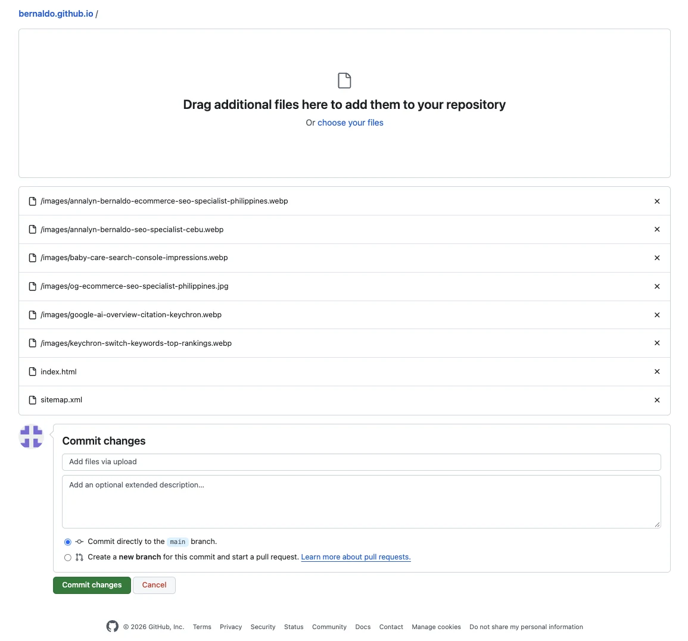
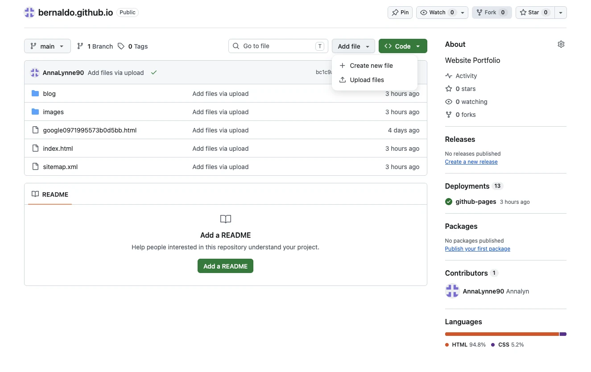
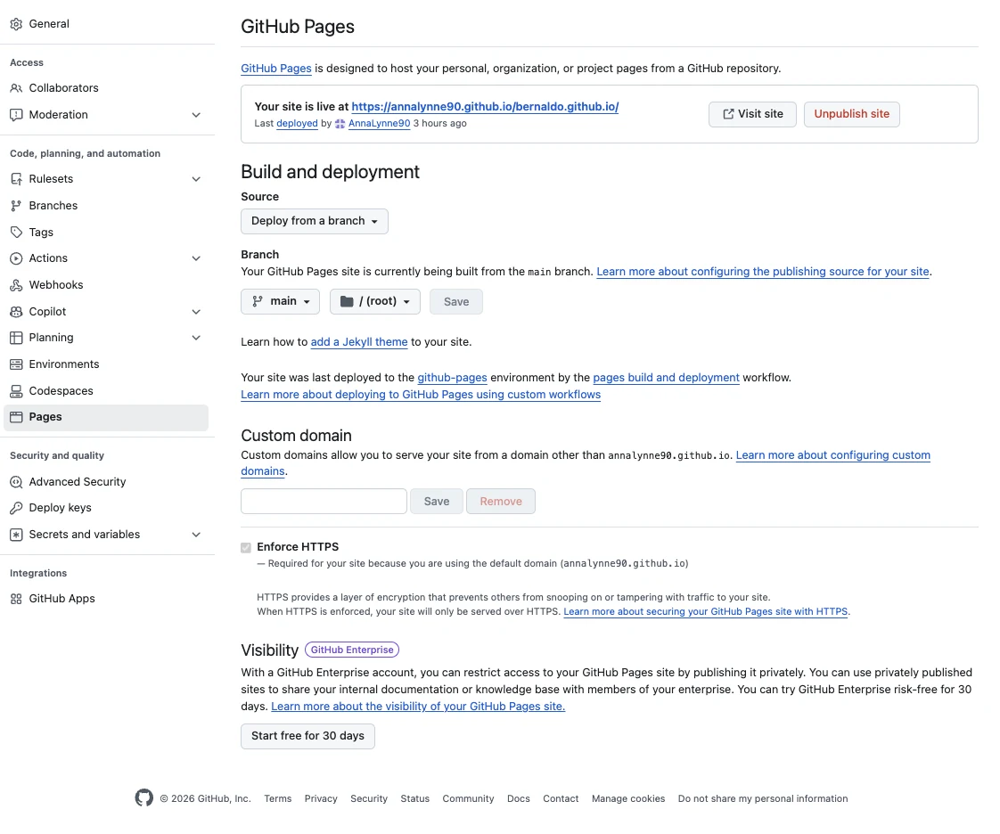
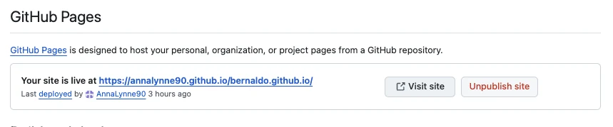
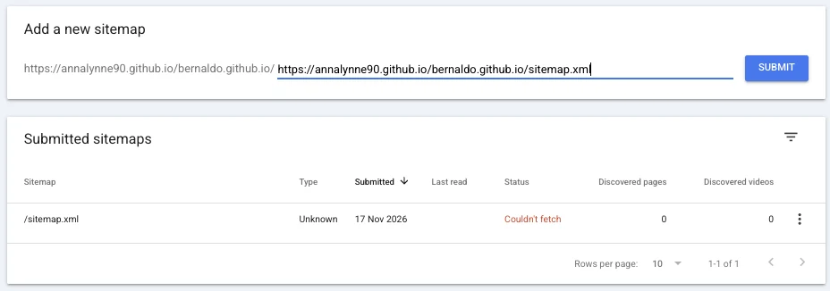
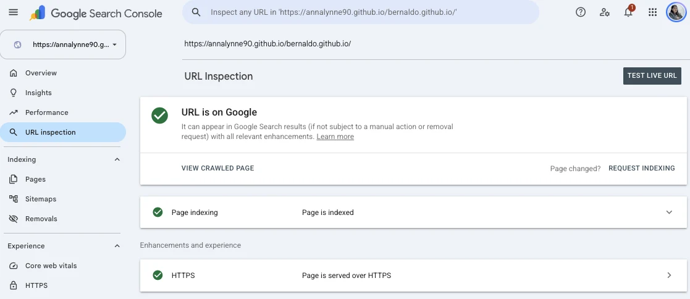

- Ask Claude to build a one-page portfolio from your bio, results and contact details, and refine it in plain language.
- Create a free, public GitHub repository and upload the files, keeping
index.htmlat the top level. - Turn on GitHub Pages under Settings → Pages, and your site is live within a couple of minutes.
- Verify it in Google Search Console, submit a sitemap and request indexing so people can find it.
A free portfolio website used to mean a site builder with ads, a long subdomain and a "Made with…" badge you couldn't remove. Today you can build a fast, professional portfolio with Claude writing the design and code, and GitHub Pages hosting it for free, without writing a line of code yourself.
This is exactly how I built the site you're reading. Below, I'll walk you through every click, from the first prompt to getting your site on Google, plus the mistakes I made along the way so you can skip them.
What you need for a free portfolio website
- A Claude account at claude.ai. The free plan works for a one-page portfolio.
- A free GitHub account at github.com.
- Your content: a short bio, 2–4 results or projects, screenshots or photos, and your contact details.
- A professional photo of yourself (optional, but it builds trust).
- About 1–2 hours for the first version.
GitHub Pages is free for public repositories on a free GitHub account (GitHub Docs). That means anyone can see your site's files, so don't upload anything private.
How it works

Step 1: Gather your portfolio content
Claude can design the page, but it can't invent your results, and it shouldn't. Before you open Claude, put this in one document:
- Headline: what you do and for whom, e.g. "E-commerce SEO specialist for Shopify brands".
- Short bio: 3–5 sentences about your experience and location.
- Proof: 2–4 projects with real numbers (rankings, traffic, sales, before and after).
- Screenshots: results from Google Search Console, Analytics or the live search results.
- Services: 3–6 things clients can hire you for.
- Contact: email, WhatsApp, LinkedIn or a booking link.
Step 2: Ask Claude to build the page
Open a new chat in Claude, paste your content, and use a prompt like this. The more specific you are, the better the first version.
Build me a one-page portfolio website as a single index.html file. About me: [paste your headline and bio] My results: [paste 2–4 projects with numbers] Services: [paste your services] Contact: [email, WhatsApp, LinkedIn] Requirements: - Sections: hero with my photo, results/case studies, services, about, FAQ, contact - Clean, modern design with a warm color palette and good typography - Fully responsive on mobile, no horizontal scrolling - SEO: a title tag and meta description targeting "[your main keyword]", one H1, logical H2s, alt text on every image, and Person schema - Images loaded from an images/ folder (I'll upload them separately) - No external frameworks; keep all CSS and JavaScript inside the file

Step 3: Review and refine the design with Claude
Claude shows a preview of the page next to the chat. Treat the first version as a draft and ask for changes in plain language. Prompts that worked well for me:
- "Make the hero headline mention [keyword] and move my photo to the right."
- "On mobile my photo is too tall. Keep it in a 4:5 shape and center it."
- "Put each screenshot in a browser-style frame and let visitors click to enlarge it."
- "Add an FAQ section with these questions: [paste questions]."
- "Check the page for SEO: title length, meta description, headings and alt text."

Tip: Always check the preview on a phone-sized screen. Most visitors will see your portfolio on mobile first.
Step 4: Get your files ready
When you're happy with the design, ask Claude: "Give me the final index.html file to download." You can also use the download or copy option at the top of the preview.
On your computer, set up a folder that looks like this:
my-portfolio/
├── index.html ← your homepage (must be named exactly this)
└── images/
├── your-name-photo.webp
└── project-results.webp
- Name image files in lowercase with hyphens, like
annalyn-bernaldo-seo-specialist.webp. Descriptive file names also help in Google Images. - Keep images small. Ask Claude to reference
.webpimages, and convert large photos before uploading. Big images built into the HTML file make the page slow.
Step 5: Create a GitHub repository
- Sign in at github.com, click + in the top right, then New repository.
- Choose the name carefully:
yourusername.github.iogives you the shortest address:https://yourusername.github.io.- Any other name, like
portfolio, gives youhttps://yourusername.github.io/portfolio/.
- Set it to Public, then click Create repository.

Step 6: Upload your files (the right way)
- On the empty repository page, click uploading an existing file. If your repo already has files, use Add file → Upload files.
- Open your
my-portfoliofolder on your computer, select everything inside it (Ctrl+A or Cmd+A) and drag it into the upload box. - Scroll down and click Commit changes.
The mistake I made: I dragged in the whole folder instead of what was inside it. GitHub then put everything one level too deep, and my site showed a 404 error. Your index.html must sit at the top level of the repository.

index.html at the top level, then click Commit changes.
index.html at the top level. The Add file → Upload files menu is how you add or replace files later.Step 7: Turn on GitHub Pages
- In your repository, click Settings, then Pages in the left sidebar.
- Under Build and deployment, set Source to Deploy from a branch.
- Choose the main branch and the / (root) folder, then click Save.
- Wait 1–2 minutes and refresh. A message appears at the top: "Your site is live at…" with a Visit site button.


Step 8: Check your live site on desktop and mobile
Open your new address on your computer and on your phone. Click every link and button, open every image, and read every line once more. Check that:
- photos aren't stretched or cut off on mobile
- nothing runs off the right side of the screen
- your email and WhatsApp links open correctly
- the browser tab shows your page title
Step 9: Get your site on Google
A site Google doesn't know about won't bring you clients. To speed things up:
- Add a sitemap. Ask Claude for a
sitemap.xmlthat lists your page URLs, and upload it next toindex.html. - Verify in Search Console. Go to Google Search Console, add a URL prefix property with your full site address, and verify it. The simplest method is to download Google's HTML verification file and upload it to your repository.
- Submit the sitemap. Open Sitemaps, type
sitemap.xmland click Submit. If it says "Couldn't fetch" at first, open the sitemap URL in your browser. If it loads, give Google a day or two. - Request indexing. Paste your homepage URL into the URL Inspection bar and click Request indexing.

sitemap.xml in the box. A brand-new sitemap can show "Couldn't fetch" for a day or two before it changes to Success.
Want to rank for more than your name? Add helpful articles about your specialty. That's why this site has a blog, starting with an e-commerce SEO checklist.
Step 10: Update your site later
- Small text edits: on your repository page, press the . (period) key to open the github.dev editor. Edit
index.html, then use Source Control → Commit & Push. - Bigger changes: ask Claude for the updated file, then use Add file → Upload files. Uploading a file with the same name replaces the old one.
- Custom domain: buy a domain, add it under Settings → Pages → Custom domain, point its DNS to GitHub and tick Enforce HTTPS.
After any upload, wait 1–2 minutes and hard-refresh (Ctrl+Shift+R or Cmd+Shift+R) to see the new version.
Troubleshooting
| Problem | Most likely cause | Fix |
|---|---|---|
| 404 "File not found" | index.html is inside a subfolder, or Pages isn't on yet | Move files to the top level; check Settings → Pages and wait 2 minutes |
| Images don't show | File name or folder doesn't match the HTML exactly | Match names letter by letter; names are case-sensitive |
| Stretched photos on mobile | CSS forces a fixed image height | Ask Claude to add height:auto or a fixed aspect ratio |
| Old version still showing | Browser cache | Hard-refresh or open the site in a private window |
| Sitemap "Couldn't fetch" | New site, or wrong sitemap address | Open the sitemap URL in a browser; if it loads, wait 1–3 days |
Free portfolio website checklist before you share it
- Title tag under about 60 characters, with your main keyword
- Meta description around 150–160 characters
- One H1, clear H2 sections, and alt text on every image
- Real results with numbers and screenshots
- Works on mobile with no stretched images or sideways scrolling
- Email and WhatsApp links tested
- Search Console verified, sitemap submitted, indexing requested
- Link added to your LinkedIn, freelance profiles and email signature
Good to know: GitHub Pages sites can be up to 1 GB with a soft bandwidth limit of 100 GB a month, and GitHub says Pages isn't meant for running an online business or handling payments (GitHub Pages limits). A portfolio is well within those limits.
Frequently asked questions
Is GitHub Pages really free?
Yes. GitHub Pages is free for public repositories on a free GitHub account, including HTTPS. Sites can be up to 1 GB and have a soft bandwidth limit of 100 GB per month, which is far more than a portfolio needs. You only pay if you buy a custom domain.
Do I need to know how to code?
No. Claude writes the HTML and CSS for you, and you upload the files through GitHub's website by dragging and dropping. It helps to read the page Claude creates and ask for changes in plain language.
Can a GitHub Pages site rank on Google?
Yes. Google indexes GitHub Pages sites like any other website. Verify the site in Google Search Console, submit a sitemap and request indexing to speed things up, and make sure the page has a clear title, meta description and headings.
Can I use my own domain name?
Yes. Buy a domain from a registrar, add it under Settings, then Pages, then Custom domain in your repository, point the domain's DNS records to GitHub, and turn on Enforce HTTPS.
Can I sell products from a GitHub Pages site?
No. GitHub says Pages isn't meant to be a free host for running an online business or for sensitive transactions like payments. A personal or freelance portfolio is a good fit.
Conclusion
You don't need a paid website builder or coding skills to get a free portfolio website that looks professional and can rank on Google. Gather your real results, let Claude design the page, upload it to a public GitHub repository, turn on GitHub Pages and submit it to Search Console. Start simple, publish it this week, and improve it over time. The site you're reading started exactly the same way.
Sources: GitHub Docs, What is GitHub Pages? · GitHub Docs, GitHub Pages limits